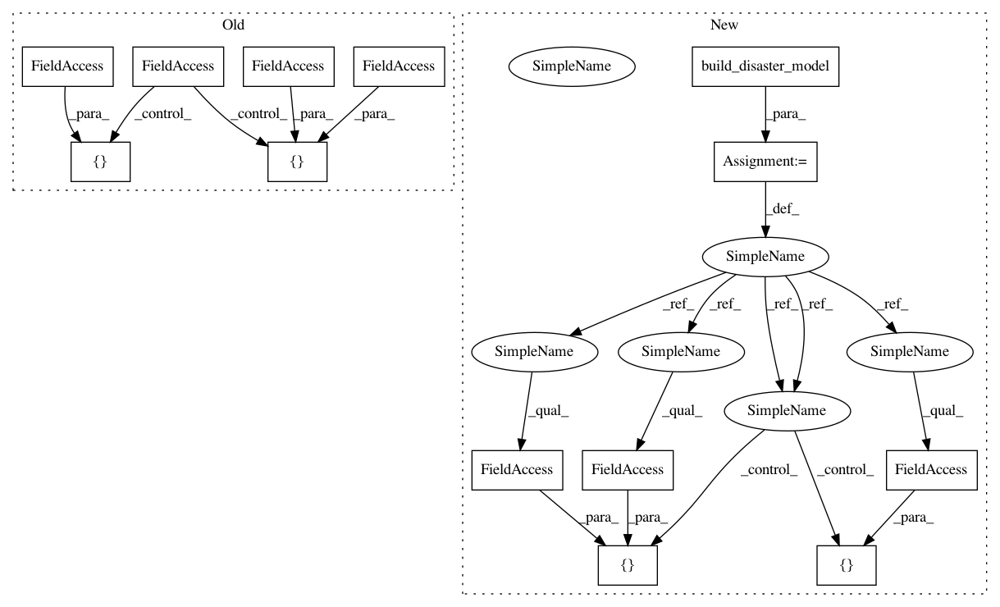

ccb03d68c2e476ba8eba80b7c22ae8aa84888b2b,pymc3/tests/test_diagnostics.py,TestGelmanRubin,get_ptrace,#TestGelmanRubin#Any#,17
Before Change
def get_ptrace(self, n_samples):
with dm.model:
// Run sampler
step1 = Slice([dm.early_mean, dm.late_mean])
step2 = Metropolis([dm.switchpoint])
start = {"early_mean": 2., "late_mean": 3., "switchpoint": 50}
ptrace = sample(n_samples, [step1, step2], start, njobs=2,
random_seed=[1, 3])
After Change
good_ratio = 1.1
def get_ptrace(self, n_samples):
model = build_disaster_model()
with model:
// Run sampler
step1 = Slice([model.early_mean_log_, model.late_mean_log_])
step2 = Metropolis([model.switchpoint])
start = {"early_mean": 2., "late_mean": 3., "switchpoint": 50}
ptrace = sample(n_samples, [step1, step2], start, njobs=2, progressbar=False,
random_seed=[1, 3])
In pattern: SUPERPATTERN
Frequency: 3
Non-data size: 13
Instances
Project Name: pymc-devs/pymc3
Commit Name: ccb03d68c2e476ba8eba80b7c22ae8aa84888b2b
Time: 2016-09-24
Author: ColCarroll@users.noreply.github.com
File Name: pymc3/tests/test_diagnostics.py
Class Name: TestGelmanRubin
Method Name: get_ptrace
Project Name: pymc-devs/pymc3
Commit Name: ccb03d68c2e476ba8eba80b7c22ae8aa84888b2b
Time: 2016-09-24
Author: ColCarroll@users.noreply.github.com
File Name: pymc3/tests/test_diagnostics.py
Class Name: TestGelmanRubin
Method Name: get_ptrace
Project Name: pymc-devs/pymc3
Commit Name: ccb03d68c2e476ba8eba80b7c22ae8aa84888b2b
Time: 2016-09-24
Author: ColCarroll@users.noreply.github.com
File Name: pymc3/tests/test_diagnostics.py
Class Name: TestDiagnostics
Method Name: get_switchpoint
Project Name: pymc-devs/pymc3
Commit Name: ccb03d68c2e476ba8eba80b7c22ae8aa84888b2b
Time: 2016-09-24
Author: ColCarroll@users.noreply.github.com
File Name: pymc3/tests/test_plots.py
Class Name:
Method Name: test_multichain_plots